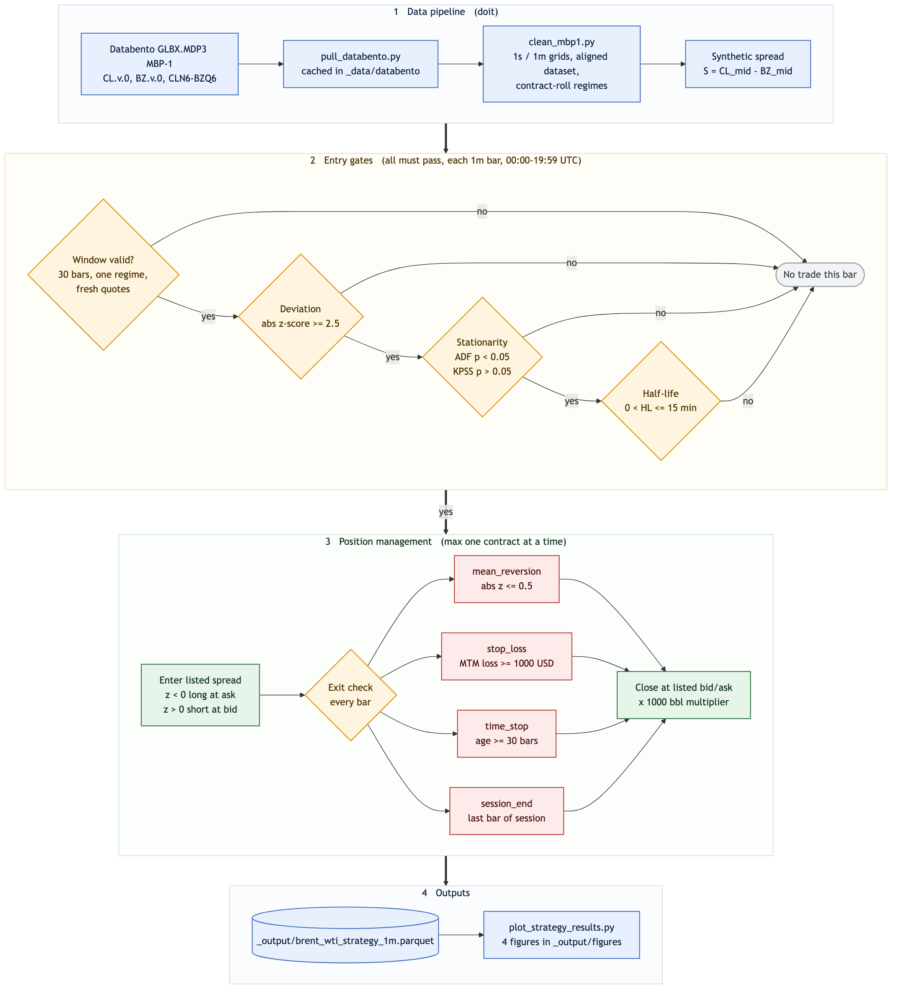

FINM 37000 Group 6 Trading#
Last updated: Aug 12, 2026, 1:51:24 AM
Project Notes
Strategy Dataframes
Table of Contents#
Pipeline Charts 📈
Pipeline Dataframes 📊
- Dataframe:
FI:brent_wti_aligned_1m- Brent-WTI Aligned (1-minute) - Dataframe:
FI:brent_wti_aligned_1s- Brent-WTI Aligned (1-second) - Dataframe:
FI:brent_wti_strategy_1m- Brent-WTI Strategy Backtest (1-minute) - Dataframe:
FI:entry_signals_1m- Entry Signals (1-minute) - Dataframe:
FI:spread_events_front- Listed Spread Events (CLN6-BZQ6)
Pipeline Specs#
Pipeline Name |
FINM 37000 Group 6 Trading |
|---|---|
Pipeline ID |
|
Lead Pipeline Developer |
Andrew Heekin, Michael Dowling, Sam Zhang, Bhuvanesh Kodem |
Contributors |
Andrew Heekin, Michael Dowling, Sam Zhang, Bhuvanesh Kodem |
Git Repo URL |
|
Pipeline Web Page |
|
Date of Last Code Update |
2026-08-11 21:50:55 |
OS Compatibility |
|
Linked Dataframes |
FI:brent_wti_aligned_1m |
Overview and Results#
This project builds and backtests an end-to-end intraday mean-reversion strategy on the Brent–WTI crude-oil spread using CME Globex MBP-1 market data from Databento. The final pipeline downloads the market data, constructs synchronized one-minute datasets, generates statistically filtered trade signals, executes those signals against the exchange-listed Brent–WTI spread, calculates executable P&L, and produces a set of backtest figures. The entire production workflow is reproducible with a single doit command once a Databento API key is supplied.
The main result is informative but statistically inconclusive: over our June 1–5, 2026 pilot sample, the implemented mean-reversion specification did not generate robust positive P&L. The default 2.5σ specification fires only 4 trades in 6,000 eligible minutes and finishes +$330, but a single trade contributes +$420 while the other three net −$90 combined. A four-trade sample cannot distinguish that from zero. We tested different entry thresholds, including 3.0 and 2.5 standard deviations; lowering the threshold created more opportunities but did not make the strategy reliably profitable. Rather than optimize aggressively to a five-day sample, we preserve a transparent baseline that demonstrates the full research and execution framework and highlights where the economic intuition does and does not survive realistic market-data and execution constraints. The full trade log and entry-gate funnel are on the Strategy Results page.
Pipeline Overview#
The four bands below map to the doit task chain: data acquisition and cleaning, the three entry gates applied to every one-minute bar, position management through to an exit, and the saved outputs.

Data and Spread Construction#
The pipeline pulls Databento GLBX.MDP3 MBP-1 data for the volume-rolled front contracts CL.v.0 (WTI) and BZ.v.0 (Brent), together with exchange-listed Brent–WTI spread instruments. Raw DBN files are cached under _data/databento/, so subsequent runs do not repurchase data that is already present.
src/clean_mbp1.py converts the event data to fixed 1-second and 1-minute grids and builds an aligned dataset. The strategy signal is based on the synthetic spread
using the midpoint of each outright’s best bid and ask. During the pilot week, the front listed spread CLN6-BZQ6 matches the contracts underlying the two continuous outrights, so it is used for trade execution. Long positions enter at the listed spread ask and exit at its bid; short positions enter at the bid and cover at the ask. This makes the backtest P&L reflect the observed bid–ask spread rather than midpoint-only execution.
Contract rolls are handled explicitly. Each row retains the underlying CL and BZ instrument IDs, and a rolling window is valid only if all observations belong to the same (CL contract, BZ contract) regime. Windows also require consecutive one-minute bars and active, non-stale outright quotes. This prevents artificial spread jumps caused by continuous-contract splicing from being mistaken for mean-reversion signals.
What the Spread Looks Like#
doit spread_diagnostics regenerates six figures that motivate the design.
Three of them carry most of the argument, and together they explain both why we
expected an edge and why we did not find one.
Over the pilot week the spread trended from about −$3.50/bbl on Monday to −$1.50/bbl on Thursday before retracing sharply. There is no stable level to revert to across the week, which rules out anchoring on a fixed long-run mean and pushes the design toward a trailing window.

Choosing that window is the central trade-off. At a daily horizon the deviation sits on one side of zero for a full day at a time — persistent drift, not reversion. At 30 minutes it oscillates tightly around zero, which is the behavior the strategy wants, but the amplitude is mostly within ±$0.20/bbl.

That small amplitude is the problem, because it has to cover execution. For most of the day the books are tight and nearly identical across venues, with a median quoted width around $0.05/bbl, then they blow out after 20:00 UTC — and in that window the front listed spread is the worst of the three, not the best. This is why the strategy stops trading at 19:59 UTC.

The remaining three figures — the deviation histogram, the PACF of deviations,
and top-of-book activity by hour — are documented in
docs_src/spread_diagnostics.md.
Strategy Logic#
The strategy operates only from 00:00 through 19:59 UTC and holds at most one listed-spread contract at a time. At every eligible minute, it forms a trailing rolling window and applies three entry gates:
Deviation: compute the spread z-score relative to its rolling mean and sample standard deviation. A sufficiently negative z-score proposes a long spread; a sufficiently positive z-score proposes a short spread.
Stationarity: by default, the rolling window must pass both an Augmented Dickey–Fuller test and a KPSS test at the 5% level. Either test can be disabled in
src/strategy_engine.py.Half-life: fit an AR(1) model to the spread window and convert the autoregressive coefficient to an estimated mean-reversion half-life. Entry is allowed only when the estimate is positive and below the configured maximum.
The default specification uses a 30-minute window, 2.5σ entry threshold, and 15-minute maximum half-life. Once entered, a trade exits when the absolute z-score returns to 0.5 or less, when mark-to-market loss reaches $1,000, after 30 minutes, or at the end of the trading session. P&L uses the listed-spread bid/ask and a 1,000-barrel contract multiplier. All rolling calculations use only observations available through the current timestamp.
Outputs#
Running the full pipeline creates the cleaned parquet datasets under _data/clean/, the backtest results at:
_output/brent_wti_strategy_1m.parquet
and four figures under _output/figures/:
strategy_01_spread_trades.png— synthetic spread, rolling mean, entries, and exitsstrategy_02_position.png— long/short/flat position through timestrategy_03_cum_pnl.png— cumulative executable P&Lstrategy_04_trade_pnl.png— realized P&L for each completed trade
The backtest parquet also records the rolling mean and standard deviation, z-score, estimated half-life, entry/exit flags, exit reason, position age, position P&L, step P&L, and cumulative P&L for each one-minute observation.
How to Run#
1. Create and activate a virtual environment#
From the repository root:
python -m venv .venv
source .venv/bin/activate
On Windows:
.venv\Scripts\activate
Install all project dependencies:
pip install -r requirements.txt
2. Add your Databento API key#
Copy the example environment file:
cp .env.example .env
Then edit .env so it contains:
DATABENTO_API_KEY=your_key_here
The key must have access to the Databento CME Globex (GLBX.MDP3) historical dataset. The first run downloads the required MBP-1 data; later runs reuse the files cached in _data/databento/.
3. Set strategy parameters#
The production backtest parameters are defined near the top of src/strategy_engine.py:
Parameter |
Default |
Meaning |
|---|---|---|
|
|
Number of one-minute observations in each rolling window |
|
|
Absolute z-score required to propose entry |
|
|
Maximum estimated mean-reversion half-life, in minutes |
|
|
Exit when |
|
|
Maximum allowed mark-to-market loss per trade, in USD |
|
|
Maximum holding period, in one-minute bars |
|
|
Require the ADF stationarity test to pass |
|
|
Require the KPSS stationarity test to pass |
The strategy is currently hard-coded to one-minute bars and the 00:00–19:59 UTC trading window. The run_strategy() function also defaults to a contract multiplier of 1000.0.
4. Run the complete project#
From the repository root:
doit
The task chain creates the data/output directories, pulls or loads the cached Databento data, cleans and aligns the MBP-1 data, runs the strategy backtest, and saves the strategy plots.
To rerun from scratch while preserving the billable Databento cache:
doit clean
doit
The Databento cache is intentionally not deleted by doit clean.
Repository layout#
Path |
Contents |
|---|---|
|
The reproducible end-to-end task pipeline |
|
Pipeline modules and their tests |
|
Exploratory research notebooks, not part of the |
|
Project documentation, dataframe reference pages, and figures |
|
Contract specifications and data notes kept under version control |
|
Generated by the pipeline; not committed |
The pipeline modules, in the order the chain runs them:
src/pull_databento.py— downloads and caches Databento MBP-1 datasrc/clean_mbp1.py— cleans, resamples, aligns, and handles contract-roll regimessrc/strategy_engine.py— entry tests, position state, exits, and P&Lsrc/plot_strategy_results.py— generates the four final backtest figuressrc/signal_generator.py— standalone rolling z-score entry signals (doit signal_generator)docs_src/figures/07_strategy_flowchart.mmd— Mermaid source for the pipeline diagram
Run the test suite with pytest src/.
For the design rationale behind the entry stack and exit rules, see
docs_src/strategy_overview.md.
Regenerating the pipeline diagram#
The diagram in Pipeline Overview is rendered from a committed Mermaid source file, so it can be edited and re-rendered when parameters change. Rendering needs Node, which is deliberately not a dependency of the doit pipeline:
npx -y @mermaid-js/mermaid-cli@11 \
-i docs_src/figures/07_strategy_flowchart.mmd \
-o docs_src/figures/07_strategy_flowchart.png \
-b white -s 3
Publishing the documentation site#
The site at
andrewheekin.github.io/finm37000-grp-6-trading
is served from the gh-pages branch. Publishing is manual
(issue #34
tracks automating it). Build from an activated virtualenv, because chartbook
shells out to sphinx-build and needs it on PATH:
source .venv/bin/activate
chartbook build -f # -> ./docs (gitignored)
# The index page is generated from README.md, which references figures by their
# repo-root-relative paths. Sphinx does not copy those, so mirror them or every
# image on the landing page 404s.
mkdir -p docs/docs_src/figures
cp docs_src/figures/*.png docs/docs_src/figures/
Preview locally with python -m http.server inside docs/, then publish the
build to gh-pages using a worktree, since docs/ is gitignored on main:
git worktree add ../gh-pages-build gh-pages
rsync -a --delete --exclude .git docs/ ../gh-pages-build/
touch ../gh-pages-build/.nojekyll
cd ../gh-pages-build && git add -A && git commit -m "Update documentation" && git push
cd - && git worktree remove ../gh-pages-build
Note that figures embedded in the site’s own pages must live under
docs_src/figures/ and be committed, since _output/ is not. After running
doit, copy any regenerated figures across before rebuilding the site.